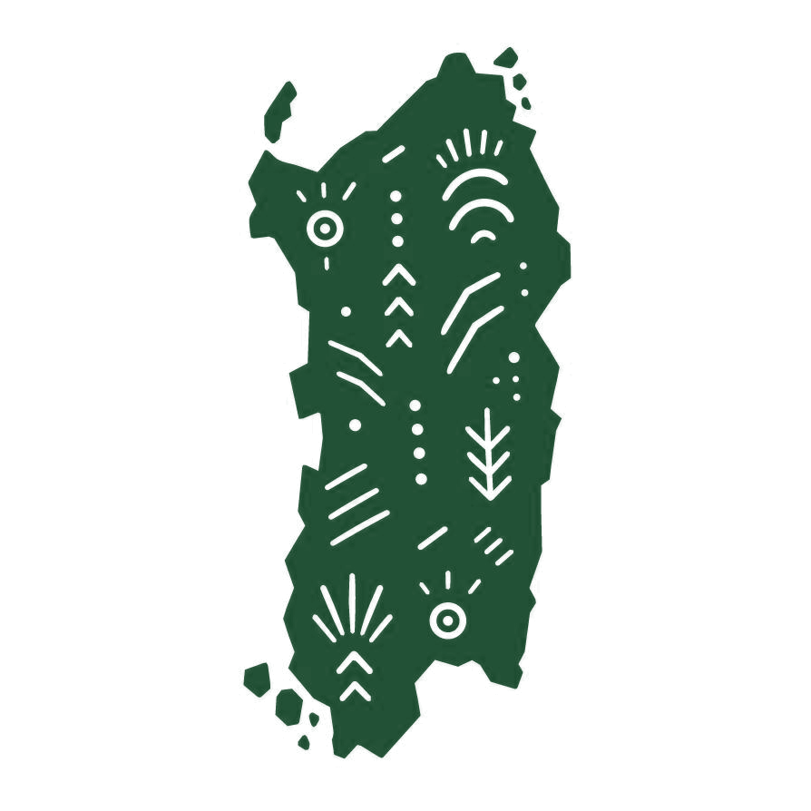
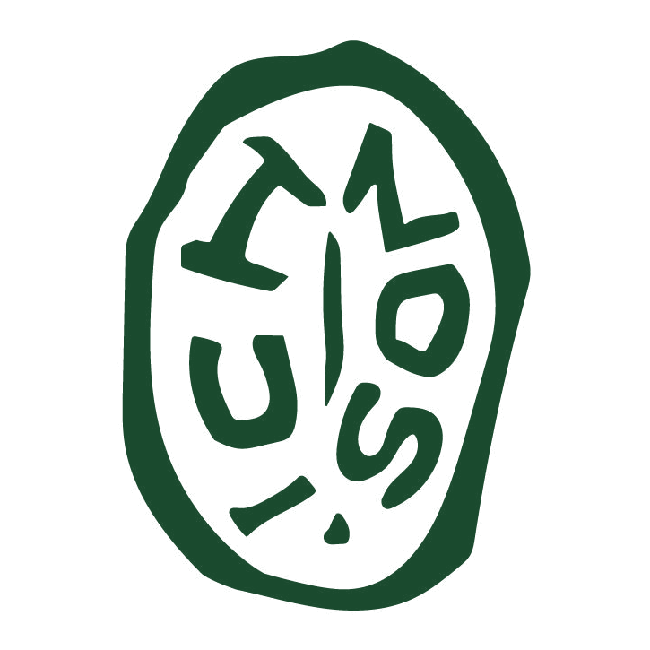

dal greco ἴχνος — orma, traccia, segno lasciato dal passaggio di qualcuno. Non solo l'impronta nel terreno: il lavoro delle persone, la storia di un territorio, quello che resta quando chi è passato non c'è più.
Non siamo un e-commerce. Siamo una scatola che cammina: parte soltanto quando qualcuno l'ha già chiesta, e porta con sé l'impronta esatta del posto da cui viene.
Conosciamo i marchi, non le persone. Sappiamo quanto costa un formaggio, ma non il nome di chi ha munto il latte, né dove pascolavano le pecore quella mattina. In pochi decenni la grande distribuzione ha reso il cibo anonimo.
Ichnos nasce per invertire il processo. L'obiettivo non è soltanto accorciare la filiera: è ricostruire un rapporto diretto fra chi produce e chi mangia, con nomi, volti e distanze verificabili.
Ogni prodotto conserva le tracce di chi lo ha lavorato. Noi ci limitiamo a non cancellarle.

Ogni promessa che facciamo è vincolata a un vincolo operativo che ci siamo dati. Se salta il vincolo, salta la promessa.
Non esistono scorte invendute a prendere polvere. Il furgone parte solo per pre-ordini già confermati: si produce quello che è già stato scelto, niente di più.
Ai produttori riconosciamo un margine superiore del 10% rispetto alla grande distribuzione, e lo paghiamo in anticipo. Chi lavora la terra non deve aspettare la vendita per essere pagato.
I prodotti viaggiano dalla terra d'origine all'hub di Felizzano, in provincia di Alessandria. Da lì, una logistica corta e chirurgica su tutto il Nord Italia.
Sensori IoT seguono viaggio e temperature in tempo reale. Sai chi ha prodotto il tuo cibo, dove si trova il suo campo e cosa ha attraversato per arrivare da te.

Per migliaia di anni il Mediterraneo è stato attraversato da mercanti che trasportavano prodotti, conoscenze e tradizioni. Il nostro simbolo riprende il linguaggio visivo di quelle monete antiche: non rappresenta il denaro, ma il commercio inteso come incontro fra culture. Applicare il sigillo a un prodotto significa dichiararne l'origine esatta.
Dentro il sistema circolano le Monete Ichnos 🟡. Non sono un gioco: sono il modo in cui un abbonamento diventa impegno anticipato verso chi produce, fuori dalle logiche della grande distribuzione. Tre ranghi accompagnano il percorso — e sono un livello di scoperta del territorio, non un listino.
Il software logistico è universale, il viaggio no: si muove a tappe. Un capitolo si apre soltanto quando il precedente cammina da solo. Nessuna fretta di occupare la mappa.
La rotta pilota parte dalle terre dei centenari. Dai pascoli della Barbagia alle coste di Cabras: piccoli artigiani, quantità limitate, niente che non sia già stato prenotato. La Sardegna è stata uno dei grandi punti d'incontro delle antiche rotte commerciali — ricominciamo da lì.
In attesa di sigillo
Ogni capitolo manterrà lo stesso sigillo e lo stesso patto. Cambieranno le mani, le maschere, il dialetto e la stagione — mai il metodo.
Proponi la prossima regioneIchnos custodisce l'impronta dei territori italiani, portandola ovunque senza alterarne l'origine.
Samuel Gavelli · fondatore
Il progetto sta in piedi solo se chi produce e chi crede nella filiera corta arrivano prima dei clienti.
Se hai un'azienda agricola, un gregge, un laboratorio artigiano, stringiamo un patto: prezzo equo e pagamento anticipato del pre-ordinato. Tu produci solo quello che è già stato scelto, noi lo portiamo intatto a persone che amano la tua terra. Nessuna esclusiva, nessun vincolo di volume.
Diventa produttore partnerSe credi nell'innovazione logistica e nella sostenibilità, puoi sostenere il progetto come sponsor: visibilità dentro le box fisiche e sui canali digitali, accanto a storie di persone vere. Cerchiamo pochi partner, coerenti.
Collabora con Ichnos